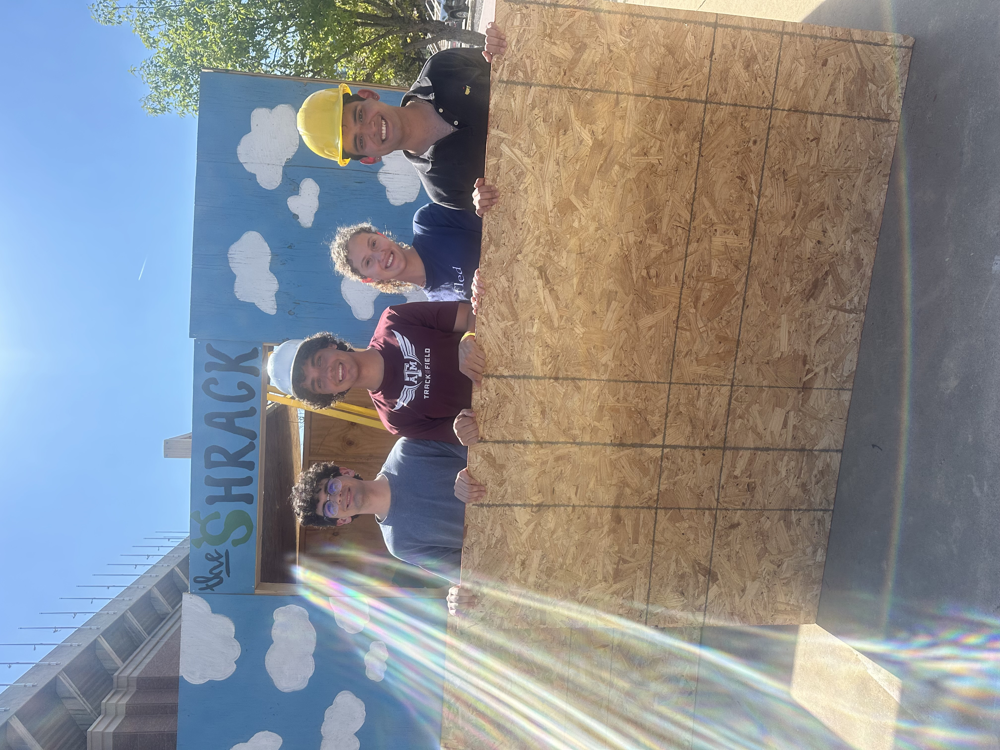
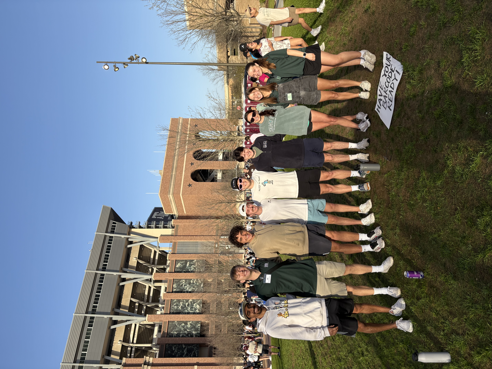
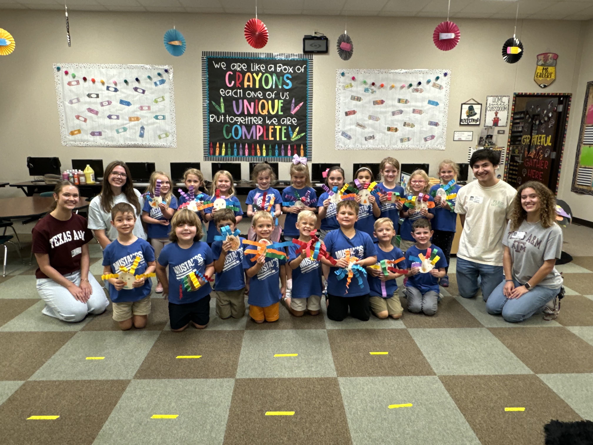

Hello! I’m Jaden McClary, a Computer Science student passionate about software engineering, machine learning, and building impactful projects. I am particularly interested in machine learning operations and CI/CD, and so I try to reflect that in my projects, including this one! Welcome to my portfolio site!
This website was built using AWS S3, CloudFront, and Route 53. I also built a CI/CD workflow that executes and updates this website anytime I commit to Github. On top of that, I put a watcher on my resume so that anytime I update it, the CI/CD workflow is triggered, and it will automatically update on here!
One thing about me is that I am heavily involved in a lot of service based opportunities, and many people are curious why I am. Some people may think it is for resume boosting, others might conspire that it is to make me look like a better person, and they would both be wrong. I have a certain approach to life where I frequently ask myself "Why not?". What I mean by this, is I ask myself if I have a good reason to not do something, and if I don't, I do it. Living by this has led me to the conclusion that I very rarely have a good reason to not give my all towards everything, whether it be work, relationships, fitness, or in this case, service. I have been very fortunate to be put in many positions with financial advantage, or just being a leader over many people, and so I frequently ask myself "Why not use this position of power to help others?". I believe this trait would be extremely helpful in the workforce, specifically in a team setting, but honestly, that's not why I included it on my personal portfolio. Selfless service is such a big part of my life, so I felt it was necessary that that's one of the first things people know about me. If you're reading this, the next time you're put in a position where you could help others, ask yourself "Why not?".

Shack-a-thon is an A&M hosted service projects where organizations are given the task to build a shack and live inside them for a week, all to raise money and awareness for aggie habitats for humanity. Aggie habitats is an organization that raises money for those in the Bryan-College Sation area who cannot adequately find a place to live. We raised money to rent out a spot to build a shack, and at the end of the week we donated all of our wood to be reused. It took us three weeks to build and paint, and I was the head of the project, so I was in charge of designing it, gathering materials, and rallying people to help build it.
The Big Event is the largest student led service project in the country. It is a day where aggies get together to help out the local community members who may not be able to help themselves. I organized a group of 95 people to be split between about 15 different people's homes where we gardened, moved furniture, cleaned their house, etc... for most of the day.


South Knoll is a local elementary school, and I help organize groups to go once a month to do arts and crafts projects with the kids. I would design the crafts ahead of time, prepare all the materials, and send a bunch of college students to go have fun and be a good role model for these kids.